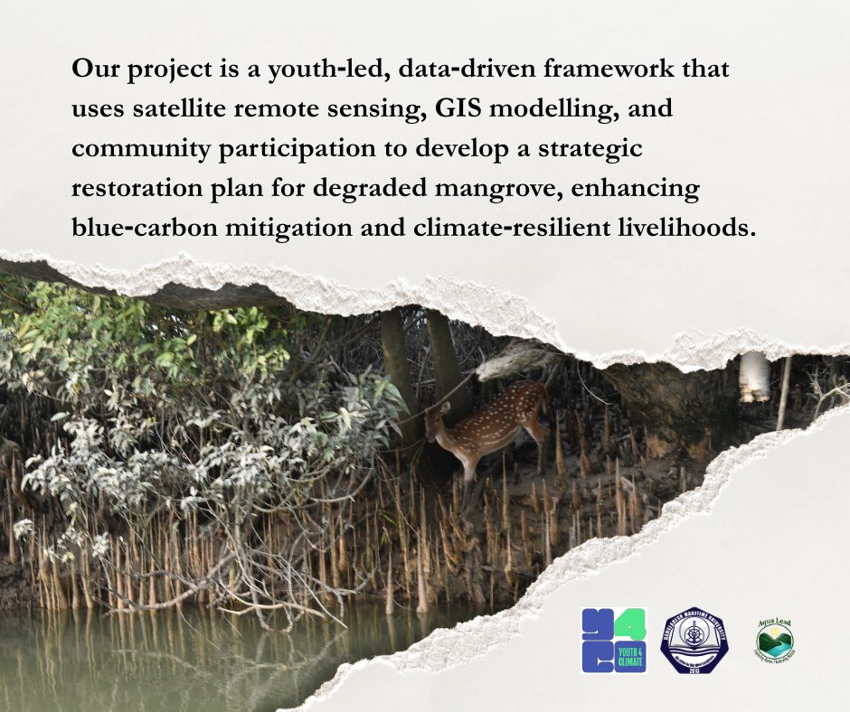

What we do
A repeatable pipeline for restoring mangroves that works with the coast, not against it.
Bangladesh is losing mangrove cover to shrimp-pond conversion, deforestation and rising salinity — right when its coastal-protection, carbon-storage and fisheries value matters most. Instead of planting wherever land is free, we built a four-phase pipeline that finds the right sites first, listens to the people who live there, and keeps checking its own work.
The problem we're addressing
Most restoration fails before a single seedling goes in the ground.
Globally, mangrove-restoration success rates are poor — not because mangroves can't grow back, but because planting sites are chosen for convenience rather than suitability, and because local communities are brought in after the decisions are already made. A plot with the wrong salinity, tidal flow or sediment profile will not recover no matter how many trees are planted.
In Bangladesh's coastal belt — including fringes of the Sundarbans — this shows up as patchy, short-lived plantations and growing distrust between restoration programmes and the fishing and farming communities who depend on these ecosystems.

Our scientific approach
Four phases. One continuous feedback loop.
Each phase feeds the next — and the last phase feeds back into the first, so the pipeline keeps improving with every site it touches.
Site Identification
Satellite imagery and GIS suitability modelling screen the entire coastline, scoring and ranking degraded zones by restoration potential — before anyone sets foot on site.
Field Validation
Teams visit the top-ranked sites to verify soil, salinity and hydrology against the satellite prediction, and sit down with local fishers and farmers to validate what the data can't show.
Restoration Planning
No two sites get the same plan. Species selection, planting density and timeline are designed around each site's specific ecology and the priorities raised by its community.
Monitoring
Open-source geospatial tools track canopy cover and survival over time, so every planted site becomes evidence that sharpens the next round of site selection.
Study area
Degraded coastal mangrove belts of southern Bangladesh.
Fieldwork and candidate-site screening are concentrated along the country's southern coastal mangrove fringe — including areas near Khulna and Cox's Bazar — where satellite screening has flagged visible canopy loss, aquaculture encroachment, or erosion risk.
Exact household- and plot-level coordinates are kept out of public materials to protect the communities we work with; this map shows the general study region only.
Expected deliverables
What this pipeline leaves behind.
🛰️ A suitability map
A ranked, GIS-based map of degraded mangrove zones along the study coastline, reusable by future restoration efforts.
🌱 Validated pilot sites
A set of field-verified, community-endorsed restoration sites with ecologically matched planting plans.
📊 An open monitoring toolkit
Open-source scripts and workflows for tracking canopy recovery from freely available satellite data.
🤝 Community engagement record
Documentation of local consultations, knowledge contributed, and the concerns that shaped site plans.
📝 Policy-ready findings
A synthesis connecting site-level results to coastal-management and blue-carbon policy conversations.
🎓 A youth-led model
A demonstration that youth-led teams can run rigorous, field-grounded restoration science from design to monitoring.
Project progress
Where we are right now.
Remote-sensing screening
Satellite-based identification and ranking of degraded mangrove zones along the study coastline is underway/complete for the initial priority area.
Field validation
Ground-truthing visits — including the Cox's Bazar field trip covering Rajakun Bridge, the wind power plant site, Sabrang Zero Point, and Jahajpura Gorjon Bon — are confirming site conditions.
Restoration planning
Site-specific restoration designs, developed with community input, for the validated priority sites.
Monitoring setup
Deployment of the open-source monitoring workflow to begin tracking recovery once planting begins.